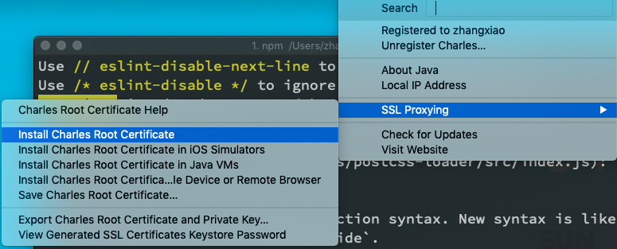
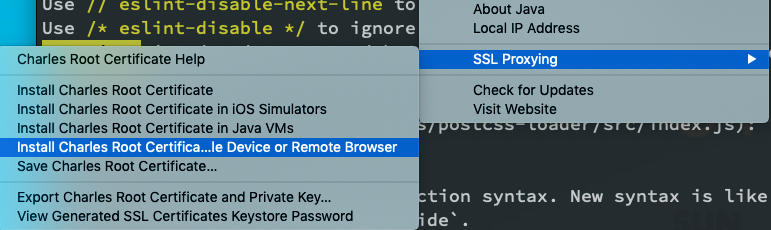
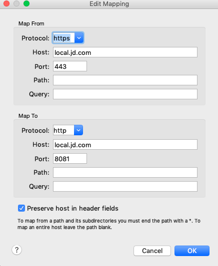
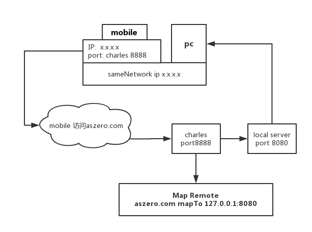
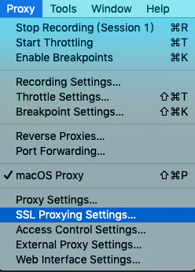
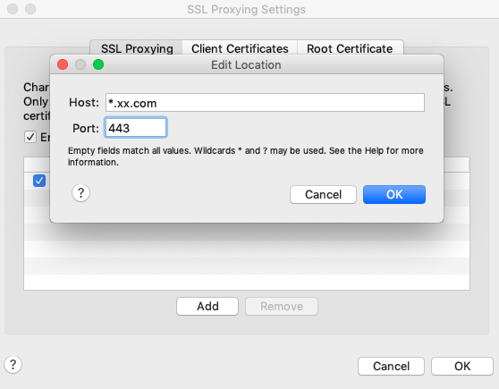

<!DOCTYPE html><html lang="zh-CN"><head><meta name="generator" content="Hexo 3.8.0"><meta http-equiv="content-type" content="text/html; charset=utf-8"><meta content="width=device-width, initial-scale=1.0, maximum-scale=1.0, user-scalable=0" name="viewport"><meta content="yes" name="apple-mobile-web-app-capable"><meta content="black-translucent" name="apple-mobile-web-app-status-bar-style"><meta content="telephone=no" name="format-detection"><meta name="description" content="始于技术 终于生活"><title>Mac利用charles进行本地服务调试 | Hexo</title><link rel="stylesheet" type="text/css" href="/css/style.css?v=0.0.0"><link rel="stylesheet" type="text/css" href="//cdn.bootcss.com/normalize/8.0.0/normalize.min.css"><link rel="stylesheet" type="text/css" href="//cdn.bootcss.com/pure/1.0.0/pure-min.css"><link rel="stylesheet" type="text/css" href="//cdn.bootcss.com/pure/1.0.0/grids-responsive-min.css"><link rel="stylesheet" href="//cdn.bootcss.com/font-awesome/4.7.0/css/font-awesome.min.css"><script type="text/javascript" src="//cdn.bootcss.com/jquery/3.3.1/jquery.min.js"></script><link rel="Shortcut Icon" type="image/x-icon" href="/favicon.ico"><link rel="apple-touch-icon" href="/apple-touch-icon.png"><link rel="apple-touch-icon-precomposed" href="/apple-touch-icon.png"></head><body><div class="body_container"><div id="header"><div class="site-name"><h1 class="hidden">Mac利用charles进行本地服务调试</h1><a id="logo" href="/."><span class="defualt">coding</span><span class="vi-color">Master</span></a><p class="description">原谅走过的那些曲折，原来留下的都是真的</p></div><div id="nav-menu"><a class="current" href="/."><i class="fa fa-home"> 首页</i></a><a href="/archives/"><i class="fa fa-archive"> 归档</i></a></div></div><div class="pure-g" id="layout"><div class="pure-u-1 pure-u-md-3-4"><div class="content_container"><div class="post"><h1 class="post-title">Mac利用charles进行本地服务调试</h1><div class="post-meta">Jul 19, 2018<span> | </span><span class="category"><a href="/categories/工具/">工具</a></span></div><div class="post-content"><p>更新于2019-01-25 17:24:49<br><a href="https://www.charlesproxy.com/" target="_blank" rel="noopener">Charles官网</a><br>mac上我一般都会用Charles作为抓包和代理映射工具<br><strong>一、普通抓包</strong><br>Charles和需要抓包的网络请求设备处于<mark>同一网络环境</mark>中。<br>1.工具栏的<code>proxy -&gt; macOS Proxy</code>勾选就可以抓包本机的请求<br>2.移动设备或者其他设备抓包请将网络的代理设置成手动，代理地址即为Charles软件所在设备的网络环境ip,端口一般为8888，设置完成后Charles会有弹框提醒是否允许信任之类的询问，直接选择<code>allow</code>，这样就可以愉快的抓其他设备的请求包来看了，这种抓包不需要安装<code>ssl证书</code>也可以抓<code>https</code>。<br><a id="more"></a><br>装本机证书<br><br>装移动端证书<br><br><strong>二、映射代理抓包</strong><br>这种不仅仅是抓包，而是一种映射代理，可以把A地址映射到B地址。在不改变A地址情况下，让访问自动跳到B地址，这有点像DNS劫持，钓鱼网站这样的做法，但是我们是用来方便开发，你可以方便的代理线上地址到本地服务或者本地资源进行调试开发。<br>1.在工具栏的Tools-&gt;Map Remote里面进行设置即可。<br>注意映射的地址要相同，映射的<mark>文件名</mark>也需要相同才能匹配成功，<br>如果你映射的是AB两网站的<code>grade2/class3/*</code>，<br>用Charles去映射A网站的<code>grade2/class3/names.js</code>到B网站的<code>grade2/class3/ages.js</code>，<br>那么<code>ages.js</code>和<code>names.js</code>两者就映射不成功，不应该用<code>grade2/class3/*</code>，<br>而是用<code>grade2/class3/names.js -&gt; grade2/class3/ages.js</code>强制一对一映射。<br><br>2.这里如果要映射的地址是<code>https</code>的话，需要下载Charles的<code>ssl证书</code>到你的设备里，否则安全机制会导致映射失败，下载地址在工具栏 <code>Help-&gt;SSL proxying</code>里面下载本地版的和移动版的有相关的提示。</p>
<p><code>Configure your device to use Charles as its HTTP proxy on x.x.x.x:8888, then browse to chls.pro/ssl to download and install the certificate.</code><br>大致意思就是移动版的需要连接代理设置端口号，参考方法1，然后访问<code>chls.pro/ssl</code>,就可以下载相应的证书了。<br>流程示意图如下：<br></p>
<p><strong>三、HTTPS映射不成功看这里</strong><br>如果上面的ssl证书装完还是不可以映射https，那么就要在这里多进行一个操作的设置，在<code>proxy -&gt; SSL Proxying setting</code>里，进行需要进行https地址的配置，默认端口为443，注意这里的实测配置为<code>*</code>后的域名后缀地址必须为<code>.com</code>，其他区域或者个性域名后缀没有映射成功,如<code>.me`</code>.love<code>，或许通过强制配置可以成功。
配置</code>SSL Proxying setting`<br><br></p>
<blockquote>
<p>原创内容，欢迎交流转载请注明出处</p>
</blockquote>
</div><div><ul class="post-copyright"><li class="post-copyright-author"><strong>本文作者：</strong>zhangxiao</li><li class="post-copyright-link"><strong>本文链接：</strong><a href="/2018/07/19/charles/">http://aszero.com/2018/07/19/charles/</a></li><li class="post-copyright-license"><strong>版权声明：</strong>aszero</li></ul></div><br><div class="tags"><a href="/tags/charles/">charles</a></div><div class="post-nav"><a class="pre" href="/2018/11/10/webpack/">webpack搭建react基础项目框架</a><a class="next" href="/2018/04/01/node笔记整理之HTTP模块/">node笔记整理之HTTP模块</a></div></div></div></div><div class="pure-u-1-4 hidden_mid_and_down"><div id="sidebar"><div class="widget widget-info"><div class="widget-info"><a style="text-align:center"></a><p class="myname">厂长大人</p><p class="slogan">Get Busy Living Or Dying</p></div></div><div class="widget"><div class="search-form"><input id="local-search-input" placeholder="Search" type="text" name="q" results="0"><div id="local-search-result"></div></div></div><div class="widget"><div class="widget-title"><i class="fa fa-file-o"> 最近文章</i></div><ul class="post-list"><li class="post-list-item"><a class="post-list-link" href="/2019/04/14/基于RESTful风格的查询api-接口文档/">基于REST风格的查询api的构思设计</a></li><li class="post-list-item"><a class="post-list-link" href="/2019/04/12/垂直横向曝光事件的发生/">垂直横向曝光事件的发生</a></li><li class="post-list-item"><a class="post-list-link" href="/2019/03/15/移动开发中视觉稿和设备之间单位自适应转化/">移动开发中视觉稿和设备之间单位自适应转化</a></li><li class="post-list-item"><a class="post-list-link" href="/2019/03/03/搭建开发脚手架CLI/">搭建开发脚手架CLI</a></li><li class="post-list-item"><a class="post-list-link" href="/2019/02/15/dotjs-webpack分模块拼接渲染/">dotjs+webpack分模块拼接渲染</a></li><li class="post-list-item"><a class="post-list-link" href="/2019/01/27/TS笔记整理/">TS笔记整理(1)-类型</a></li><li class="post-list-item"><a class="post-list-link" href="/2018/12/29/前端利用js进行图片压缩/">前端利用js进行图片压缩</a></li><li class="post-list-item"><a class="post-list-link" href="/2018/12/01/限频节流函数debounce-throttle/">限频节流函数debounce&throttle</a></li><li class="post-list-item"><a class="post-list-link" href="/2018/11/23/vue-vuex/">Vue长笔陆续更新</a></li><li class="post-list-item"><a class="post-list-link" href="/2018/11/10/webpack/">webpack搭建react基础项目框架</a></li></ul></div><div class="widget"><div class="widget-title"><i class="fa fa-folder-o"> 分类</i></div><ul class="category-list"><li class="category-list-item"><a class="category-list-link" href="/categories/dotjs/">dotjs</a></li><li class="category-list-item"><a class="category-list-link" href="/categories/git/">git</a></li><li class="category-list-item"><a class="category-list-link" href="/categories/h5/">h5</a></li><li class="category-list-item"><a class="category-list-link" href="/categories/js/">js</a></li><li class="category-list-item"><a class="category-list-link" href="/categories/node/">node</a></li><li class="category-list-item"><a class="category-list-link" href="/categories/other/">other</a></li><li class="category-list-item"><a class="category-list-link" href="/categories/tool/">tool</a></li><li class="category-list-item"><a class="category-list-link" href="/categories/ts/">ts</a></li><li class="category-list-item"><a class="category-list-link" href="/categories/vue/">vue</a></li><li class="category-list-item"><a class="category-list-link" href="/categories/webpack/">webpack</a></li><li class="category-list-item"><a class="category-list-link" href="/categories/windows/">windows</a></li><li class="category-list-item"><a class="category-list-link" href="/categories/工具/">工具</a></li></ul></div><div class="widget"><div class="widget-title"><i class="fa fa-external-link"> 友情链接</i></div><ul></ul><a href="https://github.com/joacycode" title="github.com/joacycode" target="_blank">github.com/joacycode</a></div></div></div><div class="pure-u-1 pure-u-md-3-4"><div id="footer">Copyright © 2019 <a href="/." rel="nofollow">Hexo.</a> Powered by<a rel="nofollow" target="_blank" href="https://hexo.io"> Hexo.</a><a rel="nofollow" target="_blank" href="https://github.com/tufu9441/maupassant-hexo"> Theme</a> by<a rel="nofollow" target="_blank" href="https://github.com/pagecho"> Cho.</a></div></div></div><a class="show" id="rocket" href="#top"></a><script type="text/javascript" src="/js/totop.js?v=0.0.0" async></script><script type="text/javascript" src="//cdn.bootcss.com/fancybox/3.3.5/jquery.fancybox.min.js" async></script><script type="text/javascript" src="/js/fancybox.js?v=0.0.0" async></script><link rel="stylesheet" type="text/css" href="//cdn.bootcss.com/fancybox/3.3.5/jquery.fancybox.min.css"><script type="text/javascript" src="/js/search.js?v=0.0.0"></script><script>var search_path = 'search.xml';
if (search_path.length == 0) {
   search_path = 'search.xml';
}
var path = '/' + search_path;
searchFunc(path, 'local-search-input', 'local-search-result');
</script><script type="text/javascript" src="/js/codeblock-resizer.js?v=0.0.0"></script><script type="text/javascript" src="/js/smartresize.js?v=0.0.0"></script></div></body></html>